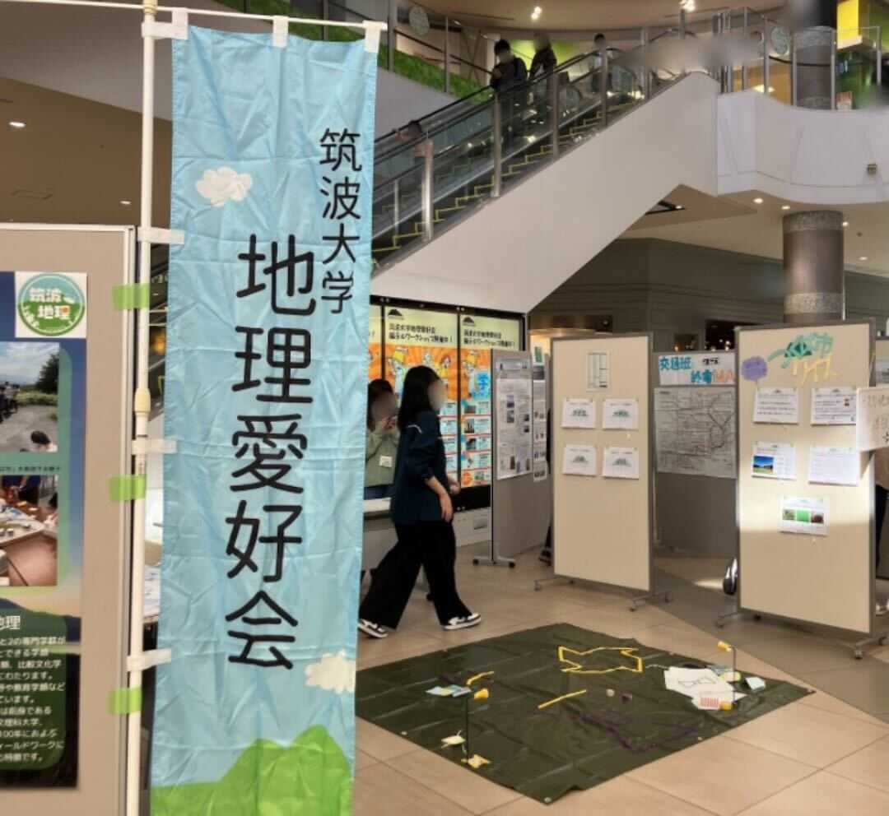
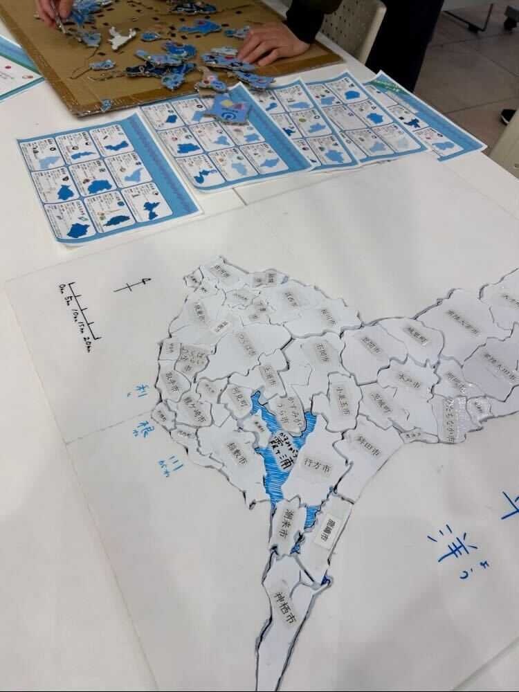
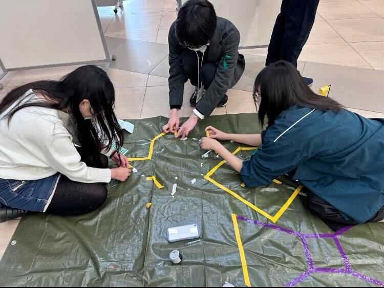
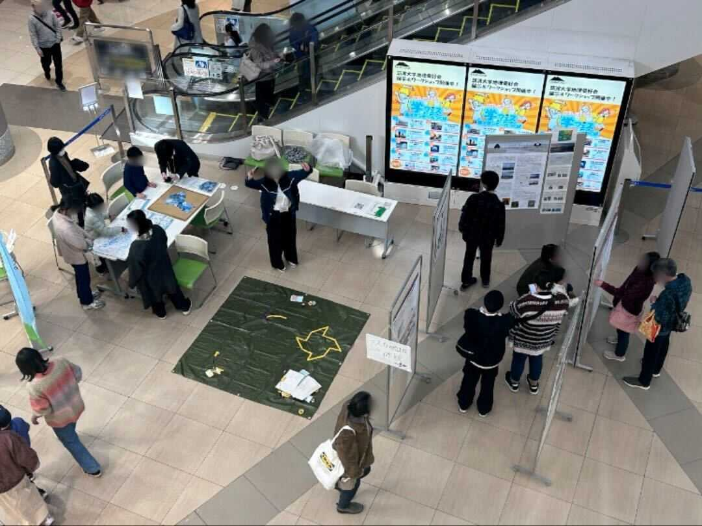

FEATURES
特集
イオンモールつくばで開催された「学フェス」に参加しました
2025/2/24
2025年2月1、2日にイオンモールつくば様にお招きいただき、展示やワークショップを行いました。 展示はつくば周辺にフォーカスしながら研究成果発表からクイズなどを盛り込み、幅広い年代の方に楽しんでいただくことができました。
ワークショップでは茨城県市町村パズルとナスカの地上絵体験の２つを行いました。 市町村パズルは当会が作成したもので、雙峰祭や学外交流イベントにおいていつも人気を博しています。 様々な市町村を実際に手に取ることで、自身が関わる市町村以外にも興味を示してもらうきっかけになりました。
ナスカの地上絵体験は、比例を応用した測量技術をもとにレジャーシートに拡大した図形を描くワークショップになります。 未就学児のお子さまにもご参加いただき、測量に関する興味の第一歩にふさわしいワークショップだったと考えております。
2日間を通して700人以上の方々が足を止めて鑑賞・体験をしていただきました。 筑波大学地理愛好会として地域の皆さまと交流し地域ならではの知見を獲得することができたほか、会員の日頃の学びの成果を披露できたいい機会でした。
